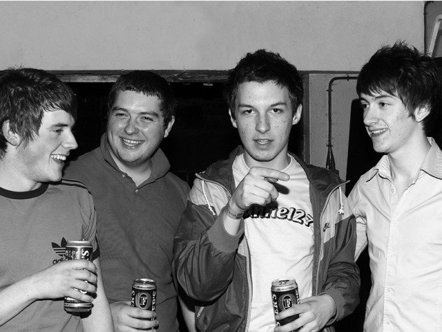
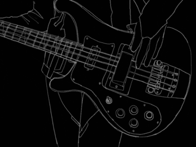
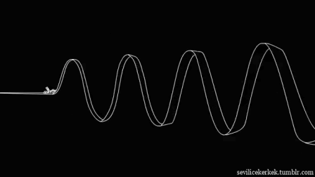
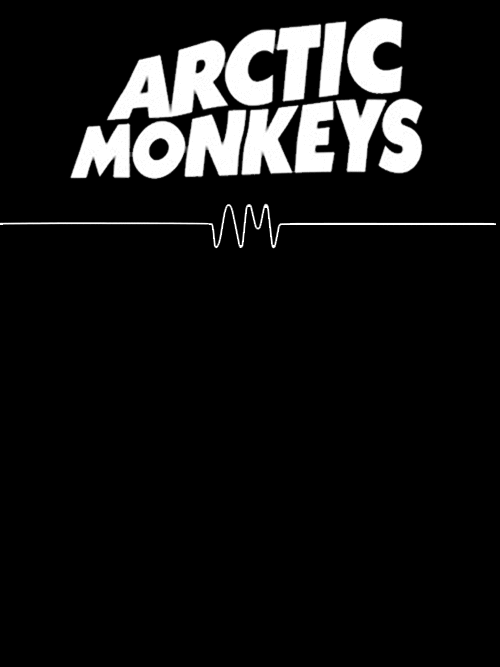

¿Quién es Arctic Monkeys?
Es una agrupación inglesa de indie rock, formada en Sheffield, Reino Unido. El grupo se compone por el
guitarrista principal y vocalista Alex Turner, el guitarrista Jamie Cook, el baterista Matt Helders y Nick
O'Malley en el bajo. La banda se ha hecho reconocida entre las bandas más populares de la última década.
El primer disco de la agrupación, "Whatever People Say I Am, That's What I'm Not", consiguió en el año 2007 el
premio al mejor álbum británico. Gracias a este exitoso lanzamiento, la banda logró hacerse cada vez más
conocida en el Reino Unido y en el resto del mundo, llegando a ser mencionada incluso por Gordon Brown, Ministro
de Hacienda británico para el año 2006, quien afirmó para el medio New Woman, que los escuchaba todos los días:
"realmente te despiertan en la mañana", fueron la palabras del político.

Comienzos de Arctic Monkeys en la Música
En el año 2001 los vecinos, Alex Turner y Jamie Cook, pidieron un instrumento como regalo para navidad,
consiguiendo
ambos una guitarra eléctrica. Luego de aprender a tocarlas por su cuenta, formaron una banda junto con los
amigos de
Alex Turner de la secundaria (Stocksbridge High School), Andy Nicholson y Matt Helders. Nicholson ya sabía tocar
el
bajo, por lo que Helders tomó su lugar en la batería.

Género musical de Arctic Monkeys
El estilo musical predominante en las canciones de Arctic Monkeys es el indie rock, contando con algunas
influencias del punk y del pop. La agrupación presenta agresivos riff de guitarras y bajos fuertes en cada uno
de sus temas.

Trayectoria y Legado de Arctic Monkeys
El estilo musical predominante en las canciones de Arctic Monkeys es el indie rock, contando con algunas
influencias del punk y del pop. La agrupación presenta agresivos riff de guitarras y bajos fuertes en cada uno
de sus temas.

Canciones más escuchadas

Mi Canción Favorita
“Do I Wanna Know?” fue escrita por el propio Alex Turner de Arctic Monkeys; y el tema fue producido por la pareja
de James Ford y Ross Orton. En un principio, Haim iba a hacer las voces de fondo en esta canción. Sin embargo, al
estar preocupadas por su propio proyecto, no pudieron hacerlo.
DO WANNA KNOW?